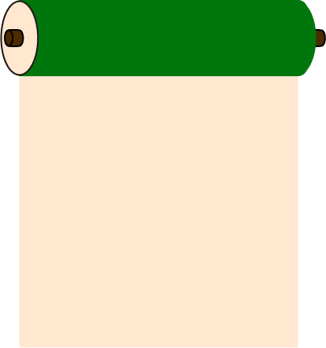

Top
承認欲求
average１
Central Fossa Magna
Time Traveler
契

グッドサインの代表的存在である親指。 多くの者が親指を求めてSNSを頑張る、指界の悪魔的存在。 とはいえ、指の中で一番重要であるのは間違いない。 赤ちゃんに人気のフレーバーでもある親指は、 関節が一つ少ないというかわいらしさも相まって、 小悪魔な指と言える。 よく親指と似ている人もいるよね。